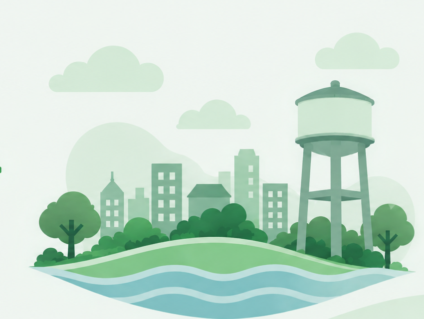

Localize
Abra o mapa e clique no ponto aproximado onde encontrou o problema.
Encontrou um problema de saneamento? Marque o local no mapa, conte o que aconteceu e ajude a dar visibilidade à situação.

Três passos para registrar uma situação no mapa.
Abra o mapa e clique no ponto aproximado onde encontrou o problema.
Escolha a categoria e explique brevemente o que está acontecendo.
Consulte os pontos registrados e veja as informações de cada ocorrência.
Veja os registros ou selecione um local no mapa para adicionar um ponto.
Registre o local e compartilhe as informações com a comunidade.